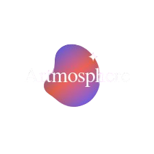

Du befindest dich jetzt in der kreativen Zone unserer Atmosphere Installation.
Das Thema dieses Raums ist eine Unterwasserwelt, die aus
verschiedenen Bereichen besteht.
Wähle zuerst den Bereich, den du gestalten möchtest.
Danach gelangst du zu einer Zeichenfläche, auf der du
dein eigenes Objekt malen kannst – ganz so, wie du es dir
im Ocean vorstellst.
Wenn du fertig bist, schickst du deine Zeichnung ab. Sie wird anschließend
in den echten Raum projiziert und als Teil
des digitalen, animierten 3D-Ozeans zum Leben erweckt.
Viel Spaß dabei, deiner Fantasie freien Lauf zu lassen!